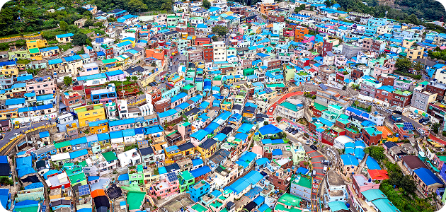

여행 안내
"노을이 하루를 마무리해 주는 동네"
바다와 강이 만나는 사하구에서는 목적 없이 걷다 보면 어느새 노을 앞에 서게 됩니다
일상의 끝에서 가장 느린 여행이 시작되는 곳, 서부산의 대표적인 풍경을 만날 수 있는 동네입니다
감천항과 포구 일대는 사하구가 바다와 함께 살아온 시간을 고스란히 간직한 공간이다. 어선과 항만 시설, 오래된 건물들은 이 지역의 산업과 노동의 역사를 말없이 전한다. 관광지로 꾸며지지 않은 풍경 속에서 서부산의 일상이 자연스럽게 드러난다. 항구를 따라 걷다 보면 바다와 함께 살아온 사람들의 삶과 도시의 또 다른 얼굴을 발견하게 된다.